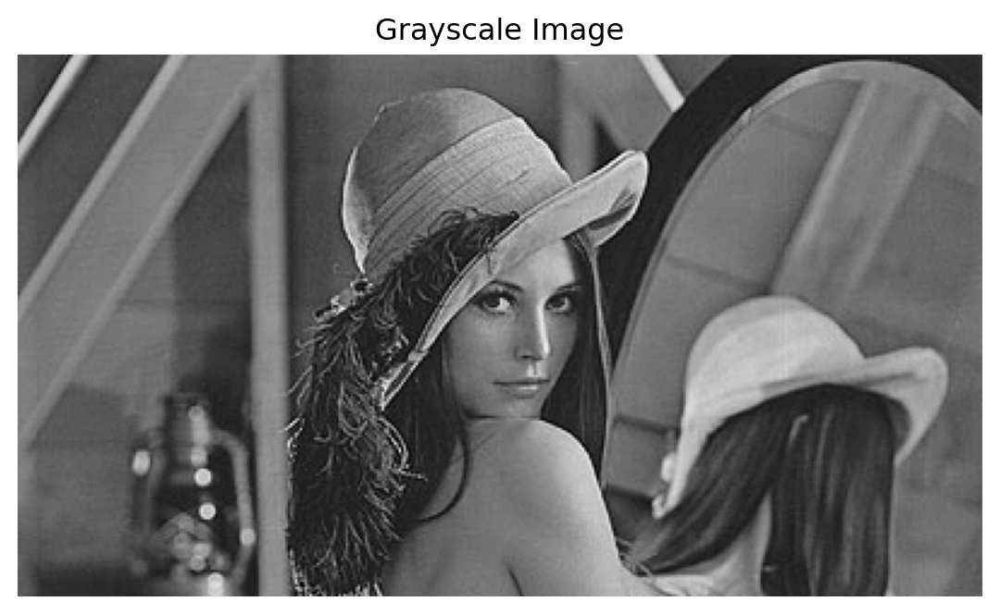
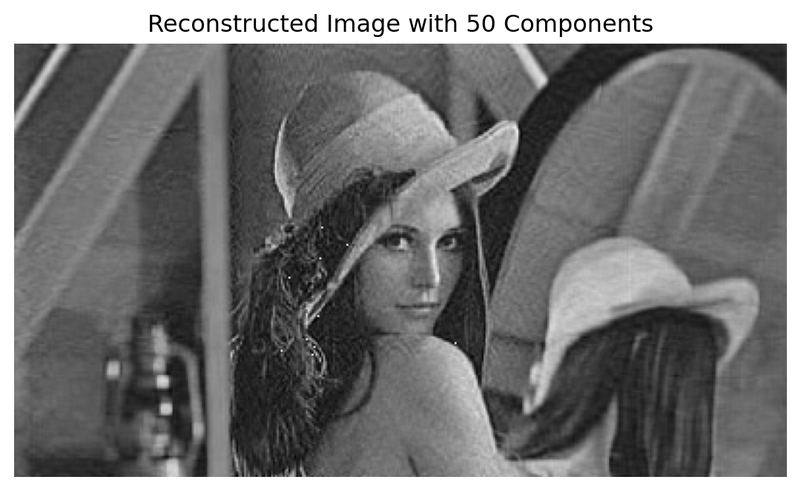

5.1 Singular Value Decomposition (SVD) – An Intuitive and Mathematical Approach
Singular Value Decomposition (SVD) is one of the most powerful matrix factorization tools in linear algebra, extensively used in areas like data compression, signal processing, machine learning, and more. SVD generalizes the concept of diagonalization to non-square matrices, decomposing any \(m \times n\) matrix \(A\) into three matrices with well-defined geometric interpretations.
5.2 The SVD Theorem
For any real or complex \(m \times n\) matrix \(A\), SVD states that:
\[
A = U \Sigma V^T
\]
Where: - \(U\) is an \(m \times m\) orthogonal matrix (or unitary in the complex case), - \(\Sigma\) is an \(m \times n\) diagonal matrix, with non-negative real numbers (the singular values of \(A\)) on the diagonal, - \(V^T\) is the transpose (or conjugate transpose in the complex case) of an \(n \times n\) orthogonal matrix \(V\).
These are range and null spaces for both the column and the row spaces.
The singular value decomposition provides an orthonormal basis for the four fundamental subspaces.
5.3 Intuition Behind SVD
The SVD can be understood geometrically: - The columns of \(V\) form an orthonormal basis of the input space. - The matrix \(\Sigma\) scales and transforms this space along the principal axes. - The columns of \(U\) form an orthonormal basis of the output space, representing how the transformed vectors in the input space map to the output space.
SVD essentially performs three steps on any vector \(x\): 1. Rotation: \(V^T\) aligns \(x\) with the principal axes.
Scaling: \(\Sigma\) scales along these axes.
Rotation: \(U\) maps the result back to the output space.
5.4 Spectral Decomposition vs. SVD
Spectral Decomposition (also known as Eigendecomposition) applies to square matrices and decomposes a matrix \(A\) into \(A = Q \Lambda Q^{-1}\), where \(Q\) is an orthogonal matrix of eigenvectors, and \(\Lambda\) is a diagonal matrix of eigenvalues.
SVD, on the other hand, applies to any matrix (square or rectangular) and generalizes this idea by using singular values (which are always non-negative) instead of eigenvalues.
5.4.1 Comparison:
Eigenvectors and Eigenvalues: Spectral decomposition only works if \(A\) is square and diagonalizable. It gives insight into the properties of a matrix (e.g., whether it is invertible).
Singular Vectors and Singular Values: SVD works for any matrix and provides a more general and stable decomposition, useful even for non-square matrices.
5.5 Steps to Find \(U\), \(\Sigma\), and \(V^T\)
Given a matrix \(A\), the SVD factors \(U\), \(\Sigma\), and \(V^T\) can be computed as follows:
Compute \(A^T A\) and find the eigenvalues and eigenvectors:
The matrix \(V\) is formed from the eigenvectors of \(A^T A\).
The singular values \(\sigma_i\) are the square roots of the eigenvalues of \(A^T A\).
Construct \(\Sigma\):
\(\Sigma\) is a diagonal matrix where the non-zero entries are the singular values \(\sigma_1, \sigma_2, \dots\), arranged in decreasing order.
Compute \(A A^T\) and find the eigenvectors:
The matrix \(U\) is formed from the eigenvectors of \(A A^T\).
Transpose \(V\):
The matrix \(V^T\) is simply the transpose of \(V\).
5.6 Example
Let’s consider a simple example where \(A\) is a \(2 \times 2\) matrix:
Given the Singular Value Decomposition (SVD) of a matrix \(A\), the matrix can be reconstructed as a linear combination of low-rank matrices using the left singular vectors \(u_i\), singular values \(\sigma_i\), and the right singular vectors \(v_i^T\).
The formula to reconstruct the matrix \(A\) is:
\[
A = \sum_{i=1}^{r} \sigma_i \, u_i \, v_i^T
\]
where: - \(r\) is the rank of the matrix \(A\) (i.e., the number of non-zero singular values), - \(\sigma_i\) is the \(i\)-th singular value from the diagonal matrix \(\Sigma\), - \(u_i\) is the \(i\)-th column of the matrix \(U\) (left singular vectors), - \(v_i^T\) is the transpose of the \(i\)-th row of the matrix \(V^T\) (right singular vectors).
5.7.1 Breakdown of Terms:
\(u_i \in \mathbb{R}^m\) is a column vector from the matrix \(U\) (size \(m \times 1\)),
\(v_i^T \in \mathbb{R}^n\) is a row vector from the matrix \(V^T\) (size \(1 \times n\)),
\(\sigma_i \in \mathbb{R}\) is a scalar representing the \(i\)-th singular value.
Each term \(\sigma_i u_i v_i^T\) represents a rank-1 matrix (the outer product of two vectors). The sum of these rank-1 matrices reconstructs the original matrix \(A\).
5.7.2 Example:
For a matrix \(A\), its SVD is represented as:
\[
A = U \Sigma V^T = \sum_{i=1}^{r} \sigma_i \, u_i \, v_i^T
\]
If the rank of \(A\) is 2, then the reconstructed form of \(A\) would be:
\[
A = \sigma_1 u_1 v_1^T + \sigma_2 u_2 v_2^T
\]
Each term \(\sigma_i u_i v_i^T\) corresponds to a low-rank approximation that contributes to the final matrix. By summing these terms, the full matrix \(A\) is obtained.
Python code demonstrating reconstruction is given below:
import numpy as np# Define the matrix A and convert it to float64A = np.array([[3, 1], [1, 3]], dtype=np.float64)# Perform SVDU, Sigma, VT = np.linalg.svd(A)# Reconstruct A using the singular values and singular vectorsA_reconstructed = np.zeros_like(A) # This will be float64 nowfor i inrange(len(Sigma)-1): A_reconstructed += Sigma[i] * np.outer(U[:, i], VT[i, :])print("Original matrix A:")print(A)print("\nReconstructed A from rank-1 matrices:")print(A_reconstructed)
Original matrix A:
[[3. 1.]
[1. 3.]]
Reconstructed A from rank-1 matrices:
[[2. 2.]
[2. 2.]]
5.8 Singular Value Decomposition in Image Processing
5.8.1 Image Compression
SVD is widely used for compressing images. By approximating an image with a lower rank matrix, significant amounts of data can be reduced without a substantial loss in quality. The largest singular values and their corresponding singular vectors are retained, allowing for effective storage and transmission.
5.8.2 Noise Reduction
SVD helps in denoising images by separating noise from the original image data. By reconstructing the image using only the most significant singular values and vectors, the impact of noise (often associated with smaller singular values) can be minimized, resulting in a clearer image.
5.8.3 Image Reconstruction
In applications where parts of an image are missing or corrupted, SVD can facilitate reconstruction. By analyzing the singular values and vectors, missing data can be inferred and filled in, preserving the structural integrity of the image.
5.8.4 Facial Recognition
SVD is employed in facial recognition systems as a means to extract features. By decomposing facial images into their constituent parts, SVD helps identify key features that distinguish different faces, enhancing recognition accuracy.
5.8.5 Image Segmentation
In image segmentation, SVD can aid in clustering pixels based on their attributes. By reducing dimensionality, it helps identify distinct regions in an image, facilitating the separation of objects and backgrounds.
5.8.6 Color Image Processing
SVD can be applied to color images by treating each color channel separately. This allows for efficient manipulation, compression, and analysis of color images, improving overall processing performance.
5.8.7 Pattern Recognition
SVD is utilized in pattern recognition tasks where it helps to identify and classify patterns within images. By simplifying the data representation, SVD enhances the efficiency and accuracy of recognition algorithms.
5.8.8 Example
from PIL import Imageimport urllib.requestimport matplotlib.pyplot as plturllib.request.urlretrieve('http://lenna.org/len_top.jpg',"input.jpg")img = Image.open("input.jpg")
# convert to grayscaleimggray = img.convert('LA')plt.figure(figsize=(8,6))plt.imshow(imggray);
# creating image histogramimport pandas as pdimport numpy as npimgmat = np.array(list(imggray.getdata(band=0)), float)A=pd.Series(imgmat)A.hist(bins=20)
# printing the pixel valuesprint(imgmat)
[ 80. 80. 79. ... 100. 94. 99.]
# dimension of the gray scale image matriximgmat.shape
(90000,)
##loading an image and show it using matrices of pixel valuesfrom skimage import iof ="http://lenna.org/len_top.jpg"#url of the imagea = io.imread(f) # read the image to a tensorc1=a[:,:,0] # channel 1c2=a[:,:,1] # channel 2c3=a[:,:,2] # channel 3print(c1)# dimension of channel-1c1.shape
## an application of matrix additionplt.imshow(0.34*c1-0.2*c2-0.01*c3, cmap='gray', vmin =0, vmax =255,interpolation='none')plt.show()
#converting a grayscale image to numpy arrayimgmat = np.array(list(imggray.getdata(band=0)), float)imgmat.shape = (imggray.size[1], imggray.size[0])imgmat = np.matrix(imgmat)plt.figure(figsize=(8,6))plt.imshow(imgmat, cmap='gray');
As promised, one line of command is enough to get the singular value decomposition. \(U\) and \(V\) are the left-hand side and the right-hand side matrices, respectively. ‘sigma’ is a vector containing the diagonal entries of the matrix \(\Sigma\) The other two lines reconstruct the matrix using the first singular value only. You can already guess the rough shape of the original image.
U, sigma, V = np.linalg.svd(imgmat)reconstimg = np.matrix(U[:, :1]) * np.diag(sigma[:1]) * np.matrix(V[:1, :])plt.imshow(reconstimg, cmap='gray');
Let’s see what we get when we use the second, third and fourth singular value as well.
for i inrange(2, 4): reconstimg = np.matrix(U[:, :i]) * np.diag(sigma[:i]) * np.matrix(V[:i, :]) plt.imshow(reconstimg, cmap='gray') title ="n = %s"% i plt.title(title) plt.show()
Now we let \(i\) run from 5 to 51, using a step width of 5. For \(i=50\), we already get a pretty good image!
for i inrange(5, 51, 5): reconstimg = np.matrix(U[:, :i]) * np.diag(sigma[:i]) * np.matrix(V[:i, :]) plt.imshow(reconstimg, cmap='gray') title ="n = %s"% i plt.title(title) plt.show()
But how many singular values do we have after all? The following command gives us the number of entries in sigma. As it is the diagonal matrix, it is stored as a vector and we do not save the zero entries. We now output the number of singular values (the length of the vector sigma, containing the diagonal entries), as well as the size of the matrices \(U\) and \(V\).
print("We have %d singular values."% sigma.shape)print("U is of size", U.shape, ".")print("V is of size", V.shape, ".")print("The last, or smallest entry in sigma is", sigma[224])
We have 225 singular values.
U is of size (225, 225) .
V is of size (400, 400) .
The last, or smallest entry in sigma is 9.637679189276597
As Python stores the whole singular value decomposition, we do not really save space. But as you saw in the first theoretical exercise of the 10th series, we do not have to compute the whole matrices \(U\) and \(V\) if we know that we only want to reconstruct the rank \(k\) approximation. How many numbers do you have to store for the initial matrix of the picture? How many numbers do you have to store if you want to reconstruct the rank \(k\) approximation only?
Use the following Cell to find an \(i\) large enough that you are satisfied with the quality of the image. Check, how much percent of the initial size you have to store. If your picture has a different resolution, you will have to correct the terms.
i =10reconstimg = np.matrix(U[:, :i]) * np.diag(sigma[:i]) * np.matrix(V[:i, :])plt.imshow(reconstimg, cmap='gray')title ="n = %s"% iplt.title(title)plt.show()numbers =400*i + i +225* iprint("For this quality, we have to store %d numbers."% numbers)
For this quality, we have to store 6260 numbers.
If you really want to have a good quality, say you want to reconstruct using \(r - 1\) singular values, where \(r\) is the total number of singular values, is it still a good idea to use the singular value decomposition?
Singular Value Decomposition provides a general framework for decomposing any matrix into orthogonal components, revealing the underlying structure of the matrix. SVD has numerous applications in machine learning, signal processing, and more. The method to find the matrices \(U\), \(\Sigma\), and \(V^T\) involves using the eigenvalues and eigenvectors of \(A^T A\) and \(A A^T\).
5.10 Principal Component Analysis
Principal Component Analysis (PCA) is fundamentally a technique used for dimensionality reduction, feature extraction, and data visualization. While it’s widely used in various fields, its mathematical foundation lies in Singular Value Decomposition (SVD). This connection between PCA and SVD helps in understanding the underlying mechanics and simplifies PCA computations in high-dimensional spaces. In this section, we will explore PCA as a special case of SVD, present the mathematical derivations, and conclude with an advanced illustration involving image compression.
5.11 Principal Component Analysis as a Special Case of SVD
Principal Component Analysis (PCA) is a widely used technique for dimensionality reduction, feature extraction, and data compression. It is based on the mathematical foundations of linear algebra, particularly eigenvalue decomposition and singular value decomposition (SVD).
5.12 Problem Setting for PCA
Let \(X \in \mathbb{R}^{m \times n}\) represent the data matrix, where: - \(m\) is the number of data samples, - \(n\) is the number of features for each sample.
To begin, we center the data by subtracting the mean of each feature from the dataset:
\[
X_{\text{centered}} = X - \bar{X}
\]
where \(\bar{X}\) is the mean vector for the columns of \(X\).
5.13 Covariance Matrix
The covariance matrix \(C\) of the centered data \(X_{\text{centered}}\) is given by:
The covariance matrix captures the relationships between the features of the data. PCA identifies the directions (principal components) that correspond to the maximum variance in the data.
5.14 Eigenvalue Decomposition
PCA reduces to finding the eigenvalue decomposition of the covariance matrix \(C\):
\[
C v_i = \lambda_i v_i
\]
where: - \(v_i\) is the \(i\)-th eigenvector, - \(\lambda_i\) is the \(i\)-th eigenvalue associated with \(v_i\).
The eigenvectors \(v_i\) represent the principal components, and the eigenvalues \(\lambda_i\) represent the variance captured by each principal component.
5.15 Singular Value Decomposition (SVD)
PCA can be interpreted as a special case of Singular Value Decomposition (SVD). The SVD of the centered data matrix \(X_{\text{centered}}\) is:
\[
X_{\text{centered}} = U \Sigma V^T
\]
where: - \(U \in \mathbb{R}^{m \times m}\) contains the left singular vectors, - \(\Sigma \in \mathbb{R}^{m \times n}\) is the diagonal matrix of singular values, - \(V \in \mathbb{R}^{n \times n}\) contains the right singular vectors.
The right singular vectors \(V\) are equivalent to the eigenvectors of the covariance matrix \(C\), and the singular values \(\sigma_i\) are related to the eigenvalues \(\lambda_i\) by:
\[
\lambda_i = \sigma_i^2
\]
PCA Derivation Summary
To summarize:
Center the data by subtracting the mean of each feature.
Compute the covariance matrix \(C = \frac{1}{m-1} X_{\text{centered}}^T X_{\text{centered}}\).
Perform eigenvalue decomposition of \(C\) to find the eigenvectors and eigenvalues.
Alternatively, perform SVD of \(X_{\text{centered}}\). The right singular vectors are the principal components, and the singular values are related to the variance.
5.16 Applications of PCA
PCA has several practical applications:
Dimensionality Reduction: PCA reduces the number of dimensions in a dataset while retaining the most important information.
Image Compression: PCA can compress images by keeping only the principal components that capture the most variance.
Feature Extraction: PCA is used in machine learning to extract the most significant features from high-dimensional datasets, speeding up computations and preventing overfitting.
5.17 Image Compression using PCA
Consider an image represented as a matrix \(A \in \mathbb{R}^{n \times n}\), where each entry is a pixel intensity. To apply PCA for image compression:
Flatten the image into a matrix where each row represents a pixel.
Compute the covariance matrix of the image.
Perform eigenvalue decomposition or SVD on the covariance matrix.
Select the top \(k\) eigenvectors and project the image onto these eigenvectors.
5.18 Principal Component Analysis (PCA) for Image Reconstruction
In this example, we will use PCA to reduce the dimensionality of an image and then reconstruct it using only a fraction of the principal components. We will demonstrate this with the famous Lena image.
Step 1: Load and Display the Image
First, let’s load the image using the PIL library and display it.
from PIL import Imageimport urllib.requestimport matplotlib.pyplot as plt# Load the image from URLurllib.request.urlretrieve('http://lenna.org/len_top.jpg', "input.jpg")# Open and display the imageimg = Image.open("input.jpg")plt.imshow(img)plt.title("Original Image")plt.axis('off')plt.show()
Step 2: Convert the Image to Grayscale
To simplify the PCA process, we will work with the grayscale version of the image.
# Convert image to grayscaleimg_gray = img.convert('L')plt.imshow(img_gray, cmap='gray')plt.title("Grayscale Image")plt.axis('off')plt.show()# Convert to NumPy arrayimg_array = np.array(img_gray)print("Image Shape:", img_array.shape)

Image Shape: (225, 400)
Step 3: Apply PCA to the Grayscale Image
We will apply PCA to compress the image by reducing the number of principal components used for reconstruction.
from sklearn.decomposition import PCAimport numpy as np# Flatten the image into 2D (pixels x features)img_flattened = img_array /255.0# Normalize pixel valuespca = PCA(n_components=50) # Choose 50 components# Fit PCA on the image and transformimg_transformed = pca.fit_transform(img_flattened)# Print the explained variance ratioprint("Explained Variance Ratio:", np.sum(pca.explained_variance_ratio_))
Explained Variance Ratio: 0.9480357612223579
Step 4: Reconstruct the Image using the Reduced Components
Now we use the transformed PCA components to reconstruct the image and compare it with the original.
# Reconstruct the image from PCA componentsimg_reconstructed = pca.inverse_transform(img_transformed)# Rescale the image back to original pixel values (0-255)img_reconstructed = (img_reconstructed *255).astype(np.uint8)# Plot the reconstructed imageplt.imshow(img_reconstructed, cmap='gray')plt.title("Reconstructed Image with 50 Components")plt.axis('off')plt.show()

Step 5: Compare the Original and Reconstructed Images
Finally, let’s compare the original grayscale image with the PCA-reconstructed image to see how well it retains essential details.
# Plot original and reconstructed side by sidefig, ax = plt.subplots(1, 2, figsize=(10, 5))# Original Grayscale Imageax[0].imshow(img_array, cmap='gray')ax[0].set_title("Original Grayscale Image")ax[0].axis('off')# Reconstructed Imageax[1].imshow(img_reconstructed, cmap='gray')ax[1].set_title("Reconstructed Image (50 Components)")ax[1].axis('off')plt.show()
This lab exam covers Spectral Decomposition, Singular Value Decomposition (SVD), and Principal Component Analysis (PCA). For each question, perform the necessary computations and provide your answers.
5.20.1 Question 1: Spectral Decomposition of a Symmetric Matrix
For the matrix \[
A = \begin{bmatrix} 1 & 2 & 6 \\ 3 & 5 & 6 \\ 4 & 6 & 9 \end{bmatrix}
\] find its spectral decomposition. Calculate the eigenvalues, eigenvectors, and express \(A\) as \(PDP^{-1}\), where \(D\) is a diagonal matrix of eigenvalues and \(P\) contains the eigenvectors.
5.20.2 Question 2: Diagonalization of a Matrix
Given \[
B = \begin{bmatrix} 2 & 1 \\ 1 & 2 \end{bmatrix}
\] find the eigenvalues and eigenvectors, and use them to express \(B\) in its spectral decomposition form.
5.20.3 Question 3: Eigenvalues and Eigenvectors of a Square Matrix
For the matrix \[
C = \begin{bmatrix} 4 & 0 & 0 \\ 0 & 3 & 1 \\ 0 & 1 & 2 \end{bmatrix}
\] find the eigenvalues and eigenvectors. Verify that the matrix can be reconstructed from its eigenvalues and eigenvectors.
For the matrix \[
D = \begin{bmatrix} 5 & 4 \\ 4 & 5 \end{bmatrix}
\] find its spectral decomposition and confirm whether the eigenvectors form an orthogonal matrix.
5.20.5 Question 5: Singular Value Decomposition (SVD)
For the matrix \[
E = \begin{bmatrix} 3 & 1 \\ -1 & 3 \end{bmatrix}
\] compute its Singular Value Decomposition. Write the matrix as \(U \Sigma V^T\), where \(U\) and \(V\) are orthogonal matrices and \(\Sigma\) is a diagonal matrix with singular values.
5.20.6 Question 6: Rank-1 Approximation Using SVD
Using the matrix \[
F = \begin{bmatrix} 1 & 2 & 3 \\ 4 & 5 & 6 \\ 7 & 8 & 9 \end{bmatrix}
\] perform a rank-1 approximation. Calculate the Frobenius norm of the difference between \(F\) and its rank-1 approximation.
5.20.7 Question 7: Matrix Compression Using SVD
For the matrix \[
G = \begin{bmatrix} 10 & 20 & 30 \\ 20 & 30 & 40 \\ 30 & 40 & 50 \end{bmatrix}
\] find a compressed form of \(G\) using only the most significant singular value. Provide the resulting approximation.
5.20.8 Question 8: SVD Data Reconstruction
For the matrix \[
H = \begin{bmatrix} 4 & 11 \\ 14 & 8 \\ 1 & 5 \end{bmatrix}
\] find its Singular Value Decomposition. Reconstruct the matrix from the SVD components.
5.20.9 Question 9: Principal Component Analysis (PCA)
Consider the dataset \[
X = \begin{bmatrix} 1 & 2 \\ 3 & 4 \\ 5 & 6 \\ 7 & 8 \end{bmatrix}
\] Perform Principal Component Analysis (PCA) by first centering the data and then computing the principal components.
5.20.10 Question 10: Dimensionality Reduction with PCA
Using the dataset \[
Y = \begin{bmatrix} 2 & 4 \\ 3 & 8 \\ 5 & 7 \\ 6 & 2 \\ 7 & 5 \end{bmatrix}
\] apply PCA to reduce the data to one dimension. Project the data onto the principal component found.
5.21 Hint to Solutions.
import numpy as npimport scipy.linalg# 1. Spectral Decomposition for Matrix AA = np.array([[1, 2, 6], [3, 5, 6], [4, 6, 9]])eigenvalues, eigenvectors = np.linalg.eig(A)D = np.diag(eigenvalues)P = eigenvectorsP_inv = np.linalg.inv(P)reconstructed_A = P @ D @ P_invprint("Eigenvalues:\n", eigenvalues)print("Eigenvectors:\n", eigenvectors)print("Reconstructed A:\n", reconstructed_A)# 2. Diagonalization of Matrix BB = np.array([[2, 1], [1, 2]])eigenvalues_B, eigenvectors_B = np.linalg.eig(B)D_B = np.diag(eigenvalues_B)P_B = eigenvectors_BP_inv_B = np.linalg.inv(P_B)reconstructed_B = P_B @ D_B @ P_inv_Bprint("\nEigenvalues of B:\n", eigenvalues_B)print("Eigenvectors of B:\n", eigenvectors_B)print("Reconstructed B:\n", reconstructed_B)# 3. Eigenvalues and Eigenvectors for Matrix CC = np.array([[4, 0, 0], [0, 3, 1], [0, 1, 2]])eigenvalues_C, eigenvectors_C = np.linalg.eig(C)D_C = np.diag(eigenvalues_C)P_C = eigenvectors_Creconstructed_C = P_C @ D_C @ np.linalg.inv(P_C)print("\nEigenvalues of C:\n", eigenvalues_C)print("Eigenvectors of C:\n", eigenvectors_C)print("Reconstructed C:\n", reconstructed_C)# 4. Orthogonal Matrix Decomposition of DD = np.array([[5, 4], [4, 5]])eigenvalues_D, eigenvectors_D = np.linalg.eig(D)P_D = eigenvectors_Dreconstructed_D = P_D @ np.diag(eigenvalues_D) @ P_D.Tprint("\nEigenvalues of D:\n", eigenvalues_D)print("Eigenvectors of D (orthogonal):\n", P_D)print("Reconstructed D:\n", reconstructed_D)# 5. SVD of Matrix EE = np.array([[3, 1], [-1, 3]])U, S, Vt = np.linalg.svd(E)Sigma = np.zeros((U.shape[0], Vt.shape[0]))Sigma[:len(S), :len(S)] = np.diag(S)reconstructed_E = U @ Sigma @ Vtprint("\nU:\n", U)print("Sigma:\n", Sigma)print("V^T:\n", Vt)print("Reconstructed E:\n", reconstructed_E)# 6. Rank-1 Approximation Using SVD for Matrix FF = np.array([[1, 2, 3], [4, 5, 6], [7, 8, 9]])U_F, S_F, Vt_F = np.linalg.svd(F)rank_1_F = np.outer(U_F[:, 0] * S_F[0], Vt_F[0, :])frobenius_norm = np.linalg.norm(F - rank_1_F, 'fro')print("\nRank-1 Approximation of F:\n", rank_1_F)print("Frobenius Norm of Difference:\n", frobenius_norm)# 7. SVD for Image Compression (Matrix G)G = np.array([[10, 20, 30], [20, 30, 40], [30, 40, 50]])U_G, S_G, Vt_G = np.linalg.svd(G)compressed_G = np.outer(U_G[:, 0] * S_G[0], Vt_G[0, :])print("\nCompressed Matrix G:\n", compressed_G)# 8. SVD Data Reconstruction for Matrix HH = np.array([[4, 11], [14, 8], [1, 5]])U_H, S_H, Vt_H = np.linalg.svd(H)Sigma_H = np.zeros((U_H.shape[0], Vt_H.shape[0]))Sigma_H[:len(S_H), :len(S_H)] = np.diag(S_H)reconstructed_H = U_H @ Sigma_H @ Vt_Hprint("\nReconstructed H:\n", reconstructed_H)# 9. PCA on Small Dataset XX = np.array([[1, 2], [3, 4], [5, 6], [7, 8]])X_centered = X - np.mean(X, axis=0)U_X, S_X, Vt_X = np.linalg.svd(X_centered)print("\nCentered Data X:\n", X_centered)print("Principal Components of X:\n", Vt_X.T)# 10. Dimensionality Reduction with PCA for Dataset YY = np.array([[2, 4], [3, 8], [5, 7], [6, 2], [7, 5]])Y_centered = Y - np.mean(Y, axis=0)U_Y, S_Y, Vt_Y = np.linalg.svd(Y_centered)Y_projected = Y_centered @ Vt_Y.T[:, :1]print("\n1D Projection of Y:\n", Y_projected)